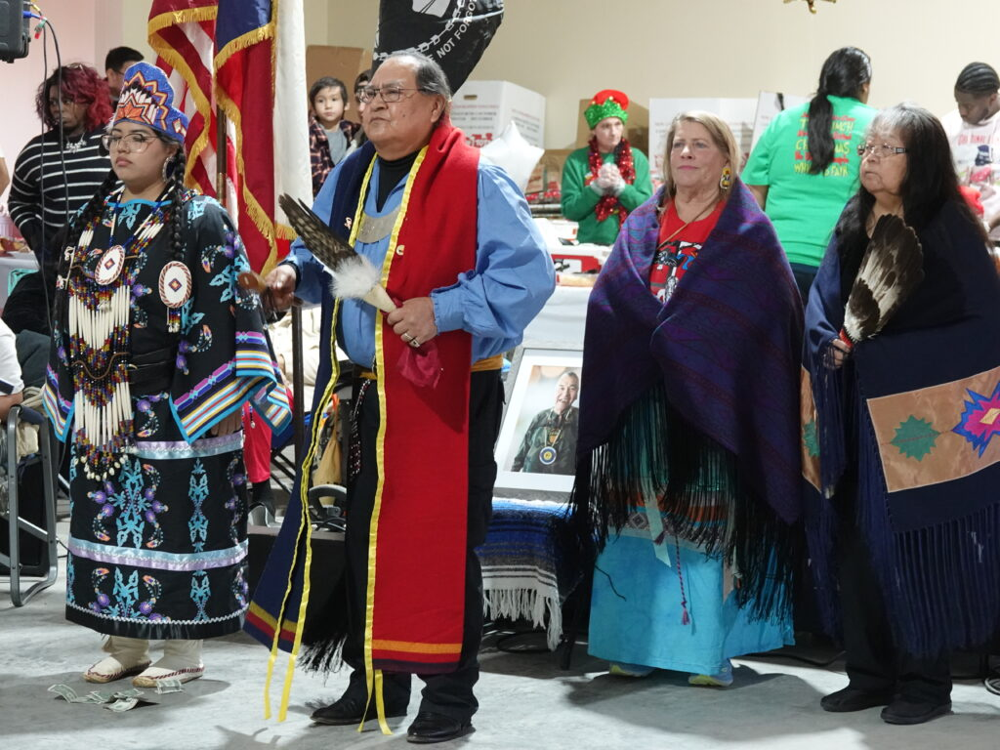
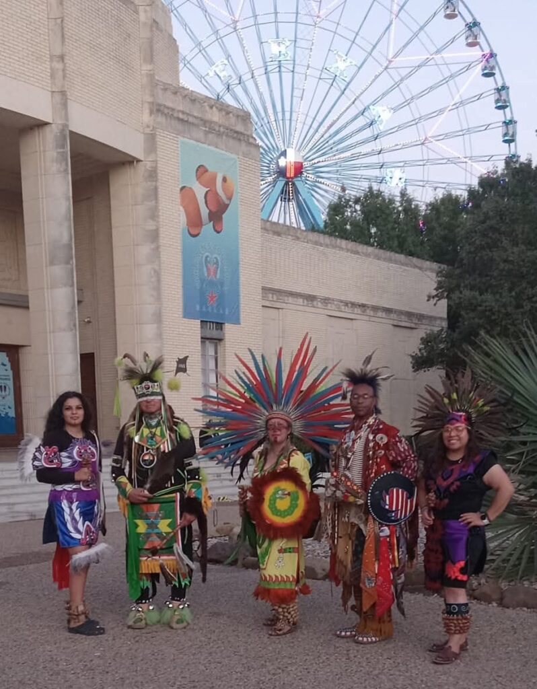

About the Intertribal Community Council of Texas
We are a 501(c)3 nonprofit organization dedicated to serve as an advocate, a conduit, and a voice for Native Americans residing in the DFW Metroplex.
Our organization seeks to positively represent, respond to, address and educate the community and organizations about issues and relevant concerns, which directly affect the quality of life and impact the cultural uniqueness of Native People.
As a result, increased awareness and understanding, enhanced community involvement, collaboration of resources, and a unified effort will allow our organization to provide solutions, to create programs, initiatives, and activities to effectively meet the economic, medical, social, cultural, and educational needs of the Native community.

Programs & Community Work
Cultural Preservation & Education
ICCT supports local efforts to preserve and educate the community about Native American culture, traditions, and history. Annually, ICCT presents a mini-powwow and Christmas Toy Drive to engage the community and celebrate cultural heritage.

Community Events
ICCT members support and engage with the local Native American community, fostering connections and celebrating cultural heritage. We march in the annual parade at the Texas State Fair.
Members participate in stickball, gardening, beading, and other community activities.
ICCT hosts gatherings that bring family and community members together including a Community Cookout, Bingo events, Coop's Annual Christmas Celebration, and the Honor Our Elders event. These gatherings strengthen community ties and provide support throughout the year.

Elder Support
ICCT provides support and resources for elders in the community, ensuring their well-being and honoring their contributions. This includes organizing events, offering assistance, and fostering a sense of community and respect for our elders. Honor Our Elders is a keystone event.

Youth & Family Support
ICCT and the community work together to provide programs and resources for youth and families, fostering a supportive environment and promoting cultural education and engagement. This includes an annual Back to School event including a meal, family centered activities, and give-ways for the youth.